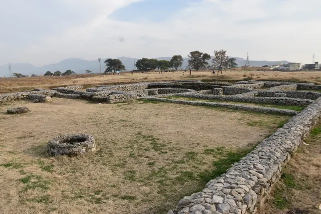

Archaeological Site · Haripur / Rawalpindi
Taxila
UNESCO World Heritage
Haripur / Rawalpindi · Khyber Pakhtunkhwa / Punjab
A serial archaeological property tracing settlement, urban development and Buddhist learning across eighteen component sites.

Place & context
A closer look
- Heritage category
- Archaeological Site
- Designation
- UNESCO World Heritage
- Inscription year
- 1980
- UNESCO criteria
- iii, vi
- Province / Region
- Khyber Pakhtunkhwa / Punjab
- District
- Haripur / Rawalpindi
18 components View components +
6 in Haripur · 12 in Rawalpindi
- Khanpur Cave
- Saraikala, prehistoric moundLocation not supplied by sourceUNESCO geographical data currently provides no coordinate.
- Bhir Mound
- Sirkap (fortified city)
- Sirsukh (fortified ruined city)
- Dharmarajika stupa and monastery
- Khader Mohra (Akhuri)
- Kalawan group of buildings
- Giri complex of monuments
- Kunala stupa and monastery
- Jandial complex
- Lalchak and Badalpur Buddhist stuppa
- Mohra Moradu stupa and monastery
- Pippala stupa and monastery
- Jaulian stupa and monastery
- Lalchak mounds
- Buddhist remains around Bhallar stupa
- Giri Mosque and tombs